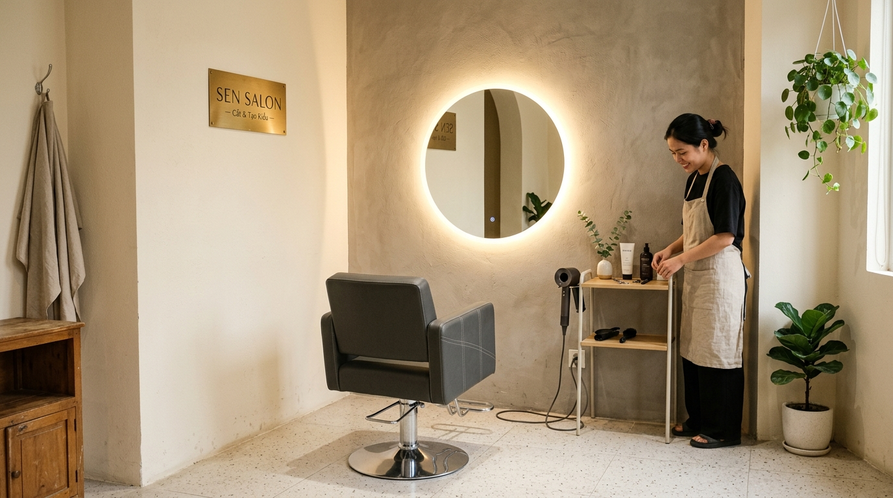
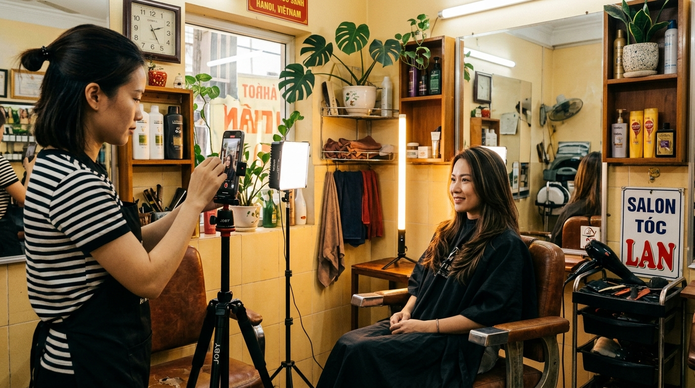
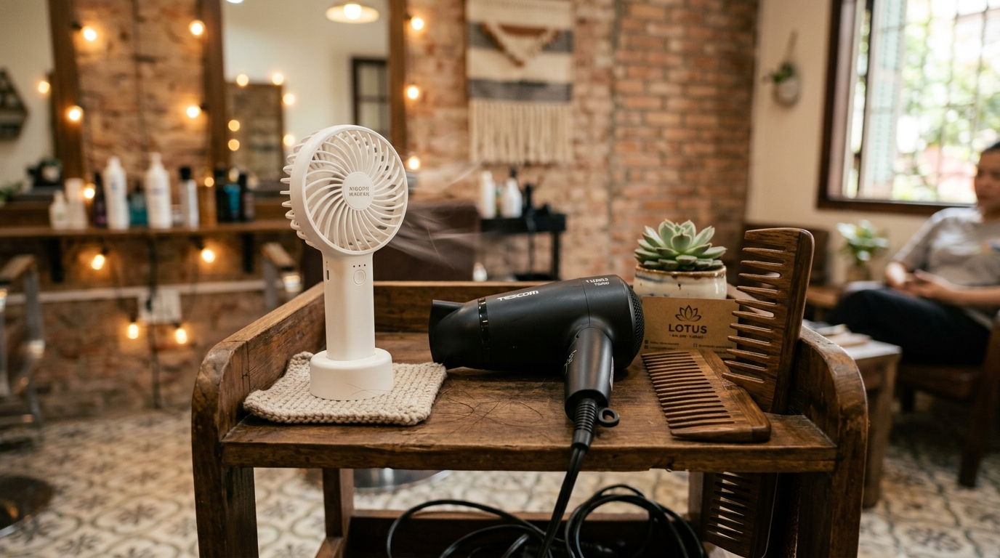
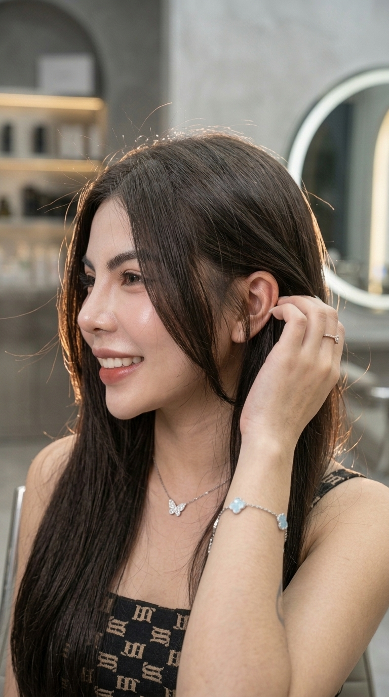
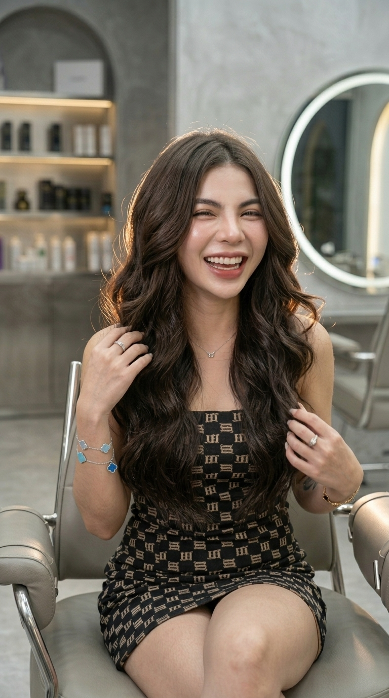
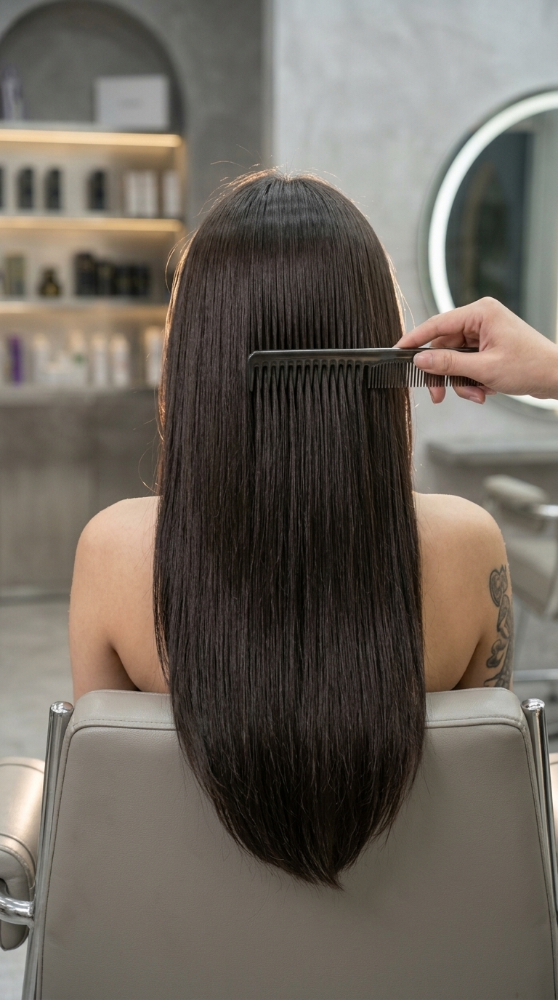
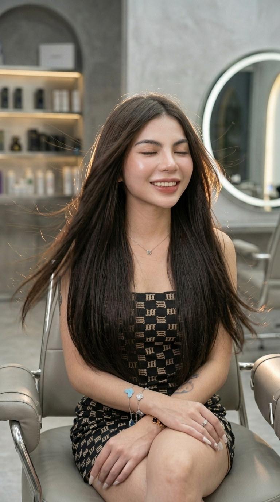
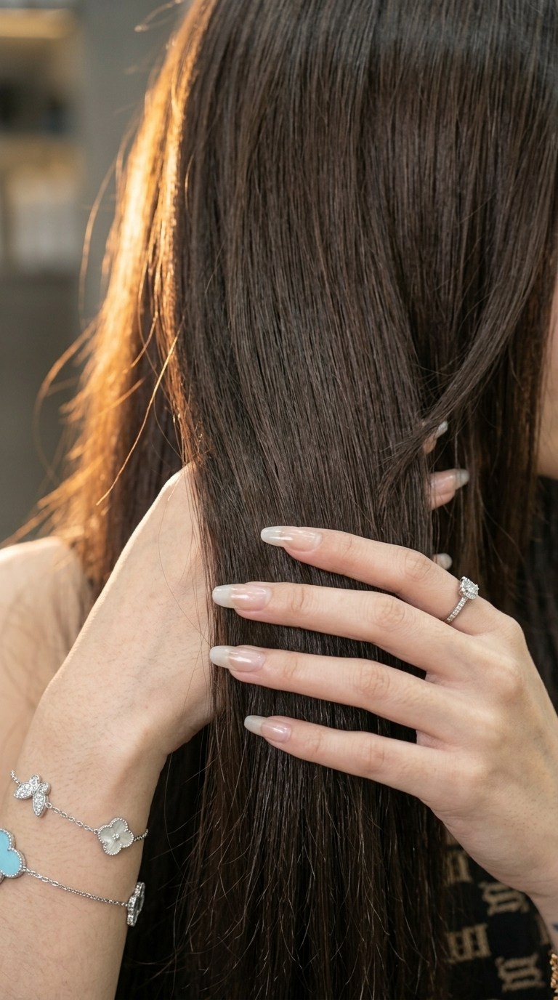
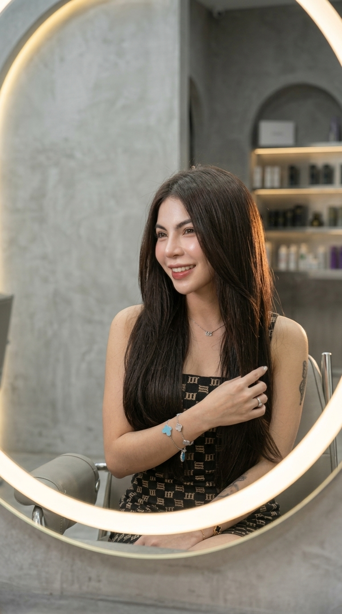

Bóc tách toàn diện: Setup góc quay thực tế cho tiệm nhỏ (chủ nữ quay bằng điện thoại + đèn Nanlite vàng ấm), Đòn bẩy tâm lý Mẫu Xinh, và 2 Bộ Kịch Bản 15s Zoom-cut chuẩn TikTok.
Clean Luxury / Gần Gũi & Tinh Tế:
Lõi: Tay nghề 10 năm xử lý cấu trúc tóc & tỉ lệ mặt
Yếu tố Mẫu xinh + Quần áo sang tạo ra 2 đòn tâm lý cực mạnh:
🔹 Hiệu ứng Hào quang (Halo Effect): Người xem tự động gán nhãn salon đẳng cấp, thợ có gu thẩm mỹ cao.
🔹 Đồng hóa bản thân (Beauty Projection): Phụ nữ vô thức tin rằng: "Cắt ở đây mình cũng sẽ xinh đẹp và cuốn hút như cô ấy."









Khách nữ xinh xắn làm tóc xong ưng ý → Mời sang "Ghế Studio": "Em ơi tóc xinh quá, anh/chị xin 1 phút quay clip ngắn lưu kỷ niệm nhé!"
Bật đèn LED nhỏ + thanh Nanlite vàng ấm + quạt mini. Đặt iPhone quay 4 đúp ngắn: 1 đúp chính diện, 1 đúp luồn tay, 1 đúp mẫu lắc tóc, 1 đúp mẫu cười vuốt tóc.
Nhập 4 clip vào CapCut, chọn nhạc trend TikTok, cắt mỗi đoạn 3-4s đúng nhịp trống, gõ 3 dòng text mẫu ở trên → Xuất video đăng ngay!